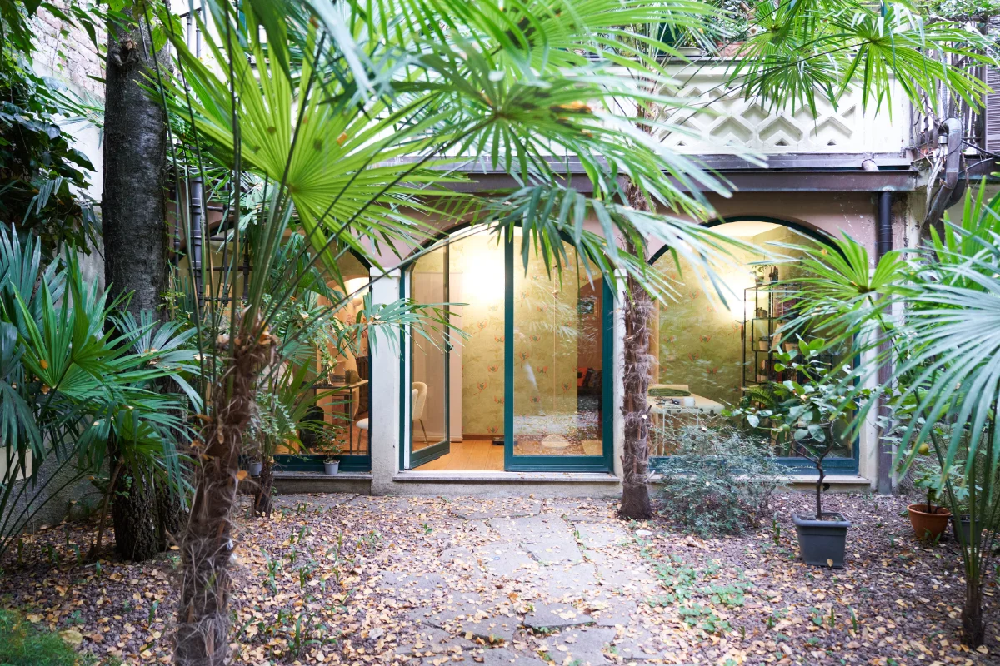

Attraverso l’anamnesi, l'analisi dello stile di vita e la valutazione della composizione corporea, definiamo insieme obiettivi realistici e un percorso nutrizionale personalizzato, pensato per integrarsi nella tua quotidianità.
01
Parliamo di ciò che mangi, dei tuoi orari e delle tue abitudini, del lavoro, del sonno e dell’attività fisica. Approfondiamo eventuali patologie, farmaci, intolleranze e altri aspetti importanti per conoscere il tuo quadro complessivo.
È la parte più approfondita della visita e quella che orienta il percorso nutrizionale.
02
La valutazione comprende misurazioni antropometriche e, quando indicato, l’analisi della composizione corporea attraverso bioimpedenziometria, pletismografia a immagine digitale e plicometria.
Perché il peso è solo un dato: sono le diverse misurazioni, considerate nel loro insieme, a restituire un quadro più completo e a permettere di seguire i cambiamenti nel tempo.
03
Sulla base di quanto emerso durante la visita, elaboro un piano alimentare personalizzato, pensato per integrarsi nelle tue abitudini e nella tua quotidianità.
Insieme al piano riceverai indicazioni e materiale informativo per comprendere meglio le scelte proposte e affrontare il percorso con maggiore consapevolezza.
Tipologie di visita
Milano · Trezzano sul Naviglio
Prima visita in studio
Un incontro completo per conoscere la tua storia, valutare il tuo stato nutrizionale e la tua composizione corporea. Insieme definiamo gli obiettivi e il percorso più adatto a te.
Studio Privato, Via Privata Valentino Pasini 21, Milano
Farmacia Borsari, Via Metastasio 3B, Trezzano sul Naviglio
A casa tua
Prima visita domiciliare
Se non puoi raggiungere lo studio, puoi ricevere la consulenza direttamente a casa tua, con una valutazione personalizzata e un percorso costruito sulle tue necessità.
Si concorda telefonicamente. Come funziona
A distanza
Consulenza online
Un’opzione comoda e flessibile per ricevere supporto nutrizionale, approfondire le tue esigenze alimentari e valutare l'eventuale necessità di un'integrazione, a distanza.
Almeno 30 minuti prima ricevi il link per collegarti, da computer o da telefono. Tieni a portata di mano gli esami più recenti. Prenota la consulenza nutrizionale online
In studio o a domicilio
Visita di controllo
Un momento dedicato a verificare i progressi, confrontarci sulle difficoltà incontrate e aggiornare il percorso nutrizionale in base ai cambiamenti e alle tue esigenze.
La frequenza si definisce insieme, in base al percorso.
VISITA DOMICILIARE
Per chi ha difficoltà a spostarsi, la visita può svolgersi direttamente al domicilio, con la stessa attenzione e lo stesso tempo dedicati in studio.
Per chi
Persone anziane
Con l'età cambiano l'appetito, le esigenze nutrizionali e spesso anche il modo di fare la spesa e di cucinare. Valutarli a casa permette di costruire indicazioni concrete e realistiche.
Per chi
Mobilità ridotta
Quando lo spostamento è faticoso o non è possibile, la valutazione nutrizionale si svolge comunque, adattando le misurazioni alla situazione.
Che visita è
Una visita completa
Si eseguono anamnesi, valutazione della composizione corporea e creazione del piano alimentare. Se un familiare si occupa dei pasti, può partecipare all'incontro.
Le visite a domicilio si concordano telefonicamente: valuto zona e disponibilità caso per caso.
GLI STRUMENTI PER LA VALUTAZIONE DELLA COMPOSIZIONE CORPOREA
Il numero sulla bilancia, da solo, non è sufficiente per descrivere come è composto il nostro corpo.
Una variazione di peso può infatti essere legata a cambiamenti della massa grassa, della massa magra e dei liquidi corporei. Per questo, quando indicato, durante la visita nutrizionale la valutazione del peso può essere integrata con un’analisi della composizione corporea.
01
La bioimpedenziometria è una metodica che, attraverso l’analisi dell’impedenza bioelettrica, permette di ottenere informazioni sulla composizione corporea e sulla distribuzione dei liquidi corporei.
L’analisi può fornire informazioni relative a massa grassa, massa magra, acqua corporea e compartimenti corporei, oltre a diversi parametri bioelettrici utili per una valutazione più approfondita della composizione corporea.
02
La plicometria consiste nella misurazione dello spessore delle pliche cutanee in specifiche sedi corporee. I valori rilevati possono essere utilizzati, attraverso specifiche formule, per stimare la quantità di tessuto adiposo.
È una metodica semplice e non invasiva che può integrare la valutazione antropometrica e la conoscenza della composizione corporea.
03
La Pletismografia a Immagine Digitale, attraverso la metodica SLSDI – Single Lateral Standing Digital Image, permette di effettuare una valutazione antropometrica digitale a partire da una singola immagine laterale della persona.
La metodica consente di stimare massa grassa, massa magra, grasso addominale e acqua corporea e di effettuare rilevazioni antropometriche digitali, come le misure di torace, addome, fianchi, coscia e polpaccio.
È inoltre possibile confrontare nel tempo immagini e silhouette, rendendo più visibili i cambiamenti della forma e delle dimensioni corporee.
comprendere meglio la situazione di partenza;
definire obiettivi nutrizionali personalizzati;
monitorare nel tempo i cambiamenti della massa grassa e della massa magra;
osservare le variazioni della distribuzione corporea;
valutare cambiamenti che non sempre emergono dal solo peso;
accompagnare il percorso nutrizionale insieme alle modifiche dello stile di vita e dell’attività fisica.

Nel dubbio, scrivi ad atorinoluigia@gmail.com oppure chiama al 347-7289544: ti consiglio l’opzione giusta per te.
Dott.ssa Luigia Atorino — Biologa Nutrizionista · Profilo MioDottore